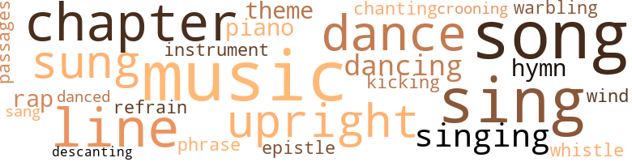

Music terms in the text
102 music-related terms matched in this text.
Most frequent terms in this topic: music (13); sing (11); song (9); chapter (8); line (7)

chapter.n.01
Definition: a subdivision of a written work; usually numbered and titled
| word |
sentence |
| chapter |
It was late on the morning after the scene described in a previous chapter when Lucile and Re-genia made their appearance at the breakfast table . |
| chapter |
" Thoughtful trifles for others are the golden lines in the chapter of life , " said Lotus politely , as he lifted his ' chapeau and walked toward the gate . |
| chapter |
As we have said in a previous chapter , Clement entered the office of one of the great dailies in Minton soon after he had left school . |
| chapter |
It was after his usual manner , he went into verbal hysterics concerning the adventure related in the previous chapter . |
| chapter |
If one real chapter from their lives , with all of its sorrows , temptations and unmentioned privations , could find its way to the happy firesides they have left , it would fill the doting parents ' hearts with sadness . |
| chapter |
It was with premonitions of dreaded contact with Dr. Leighton , Regenia left her home for the school room the morning after the meeting described in the previous chapter . |
| chapter |
As was noted in a previous chapter , the trustees had promised on the closing day of school , to enlarge the building and increase the teaching force . |
| chapter |
Abe Johnsing , whose acquaintance the reader has made in another chapter , seated himself in the witnesses ' chair . |
croon.v.01
Definition: sing softly
| word |
sentence |
| crooning |
Mrs. Levitt began to sing in a low , crooning tone some old plantation hymn . |
dance.n.01
Definition: an artistic form of nonverbal communication
| word |
sentence |
| dance |
" I rarely dance , " she said , " and when I do , it is not in public . " |
| dance |
She greeted the last figure of the dance with secret delight . |
| dance |
The ladies were there in all their glory , and as they promenade or whirl through the figures of the dance , what a picture for cosmopoly ! |
| dance |
It was noticeable on this occasion , as it is in all public gatherings , that the same persons made up a given set after each interval of the dance . |
| dance |
Each company of dancers form in themselves a social world undoubtedly satisfactory to themselves , but as free from invasion from without as if the dance was being conducted in a private parlor . |
dance.v.02
Definition: move in a pattern; usually to musical accompaniment; do or perform a dance
| word |
sentence |
| dancing |
" Did you not know that there would be dancing to-night ? " asked Clement . |
| dancing |
" Is dancing a sin ? " asked Regenia . |
| dancing |
" First tell Regenia who the petite beauty is , with whom Mr. Stone is dancing so en-trancingly ? " queried Lucile , with a provoking smile at Regenia . |
dance.v.03
Definition: skip, leap, or move up and down or sideways
| word |
sentence |
| dance |
She chose something light and airy , and as she sung , Lotus sat listening and watching her nimble fingers dance over the keys . |
| danced |
While the social world of Breeze Nook feasted and danced , these two friends in pursuit of health ; ( how commonplace ) simply slept . |
| dance |
" As I shall be too busy to dance to-night , we will indulge to-day , " he remarked to Lucile . |
descant.v.01
Definition: sing in descant
| word |
sentence |
| descanting |
" I have frequently , suspected when Mr. St. John was descanting about his looks in his heart he believed himself not so bad as he delights to make others think he is . " |
epistle.n.02
Definition: a book of the New Testament written in the form of a letter from an Apostle
| word |
sentence |
| epistle |
" I have a letter to answer , " he said , and as Lotus seemed indifferent to the implied question , he continued , " Why do you not ask to whom I am about to indite my epistle ? " |
hymn.n.01
Definition: a song of praise (to God or to a saint or to a nation)
| word |
sentence |
| hymn |
Thus she sat musing until awakened from her reverie by the congregation rising to sing the closing hymn . |
| hymn |
Mrs. Levitt began to sing in a low , crooning tone some old plantation hymn . |
kick.v.04
Definition: kick a leg up
| word |
sentence |
| kicking |
The guard , after kicking him and sticking his bayonet in the poor tired shoulders , unfastened the squad chain and placing the first couple in the rear , ordered the men forward . |
music.n.01
Definition: an artistic form of auditory communication incorporating instrumental or vocal tones in a structured and continuous manner
| word |
sentence |
| music |
During breakfast , the sound of martial music seemed to echo from every point of the compass . |
| music |
Not less than three thousand Knights , each commandery headed by a band , marched to the inspiring music with miltary precision . |
| music |
The vast multitude , the gallant Knights , the inspiring music , the competition drill and the numberless other happy incidents that are ineffaceably engraved upon my memory in vivid association with the thoughts of Prospect Park , " said Lucile . |
| music |
The music was simple , but Regenia thought it was sung with a pathetic sweetness unequaled in all her experience . |
| music |
He found her in the parlor , idly running over some music , she had recently purchased . |
| music |
Dr. Leighton came in now and then to pass an hour , spend an afternoon or listen during the long balmy evenings , to Regenia play , but oftener to bring some piece of new music to sing . |
| music |
To the thrill of inspiring music , each company , swords at a " present , " passed in review and formed in a double line , facing the Grand Officers . |
| music |
" Come , let us have some music . |
| music |
" There was other music that I much preferred to hear . " |
| music |
The brass bands , good , bad and indifferent , mostly indifferent , succeeded each other with tireless regularity for the first few hours ; but as the boat got further away from the shore and the waves increased in size , it was noticeable that the music grew more subdued , or rather more religious in character . |
| music |
The brass band , stationed upon an improvised platform built well to the front and between the two boats , discoursed sweet music for the occupants of both steamers . |
| music |
Each new arrival was met at the depot with a band of music , the Committee of Reception , and an escort of their fraters . |
| Music |
Music filled the air . |
| music |
As he chatted away in his interesting way , the music suddenly ceased , and from the stir among the lookers on , it was evi-dent that the procession was about to be formed to make a raid upon the supper room . |
musical_instrument.n.01
Definition: any of various devices or contrivances that can be used to produce musical tones or sounds
| word |
sentence |
| instrument |
Before he put down the instrument , Mrs. Levitt observed his hand shake and his face assume a deathly pallor . |
passage.n.06
Definition: a short section of a musical composition
| word |
sentence |
| passages |
" What a wealth of faith these old people have and how they apply what few passages of Holy Writ they know to the salvage of every wound of life , " thought Lotus , as he moistened ' the old man 's lips again . |
phrase.n.02
Definition: a short musical passage
| word |
sentence |
| phrase |
" Call it a wild goose chase if the phrase suits your caprice , but mind if you are not on the same chase before another day . |
piano.n.01
Definition: a keyboard instrument that is played by depressing keys that cause hammers to strike tuned strings and produce sounds
| word |
sentence |
| piano |
" What shall I sing ? " she asked , as she seated herself at the piano and began , in a dreamy way , to play . |
| piano |
He walked over to the music rack and having selected a simple ballad , placed it upon the piano , saying , " I will sing this . " |
rap.n.05
Definition: genre of African-American music of the 1980s and 1990s in which rhyming lyrics are chanted to a musical accompaniment; several forms of rap have emerged
| word |
sentence |
| rap |
She had felt some surprise before coming down to her morning 's meal that she had not heard the usual rap upon her chamber door and the usual admonition , " It is time to rise , my dear . " |
| raps |
He sent up his card , but Regenia refused to make any answer to Mrs. Landers ' repeated raps at her door . |
refrain.n.01
Definition: the part of a song where a soloist is joined by a group of singers
| word |
sentence |
| refrain |
How she hears over and over again the pathetic refrain : " Will you forget Perchance regret The nights ambrosial , Days of idle dreaming ; The songs we sung When Love was young , And earth a paradise was seeming ? " |
sing.v.02
Definition: produce tones with the voice
| word |
sentence |
| sing |
" I agree with one of our great leaders , that no negro should ever sing , ' My country , 't is of thee , Sweet land of Liberty , ' while a condition more revolting than slavery exists in the country . " |
| sing |
' My country , 't is of thee ' I sing , and whether I sing it or not it is my country and there is no possible way to divorce myself from it , except I leave it and swear allegiance to another flag . " |
| sing |
' My country , 't is of thee ' I sing , and whether I sing it or not it is my country and there is no possible way to divorce myself from it , except I leave it and swear allegiance to another flag . " |
| sung |
The music was simple , but Regenia thought it was sung with a pathetic sweetness unequaled in all her experience . |
| sing |
Thus she sat musing until awakened from her reverie by the congregation rising to sing the closing hymn . |
| sing |
Dr. Leighton came in now and then to pass an hour , spend an afternoon or listen during the long balmy evenings , to Regenia play , but oftener to bring some piece of new music to sing . |
| sing |
" What shall I sing ? " she asked , as she seated herself at the piano and began , in a dreamy way , to play . |
| sung |
She chose something light and airy , and as she sung , Lotus sat listening and watching her nimble fingers dance over the keys . |
| sung |
" Now , " she said , when the song was ended , " I have sung for you . |
| sing |
Come and sing for me . " |
| sing |
He walked over to the music rack and having selected a simple ballad , placed it upon the piano , saying , " I will sing this . " |
| sung |
" Will you forget , Perchance regret The nights ambrosial , Days of idle dreaming ; The songs we sung When love was young And earth a paradise was seeming " " When the days shall lengthen into years , And seared and yellow Life itself has grown ; Will you resentful , Or with grateful tears Seal the past , the happy past , unknown ? |
| sung |
" Will you forget , Perchance regret The nights ambrosial , Days of idle dreaming ; The songs we sung When love was young And earth a paradise was seeming . " |
| sung |
How she hears over and over again the pathetic refrain : " Will you forget Perchance regret The nights ambrosial , Days of idle dreaming ; The songs we sung When Love was young , And earth a paradise was seeming ? " |
| sing |
Mrs. Levitt began to sing in a low , crooning tone some old plantation hymn . |
| sang |
The old woman sang on , repeating the same words . |
| sing |
Having repeated this several times , she commenced to sing the same weird song with the same repetitions . |
| sing |
" She is all the world to me , " he began to sing . |
singing.n.01
Definition: the act of singing vocal music
| word |
sentence |
| singing |
After the reading , singing and prayer , the minister arose . |
| singing |
Sometimes praying , oftener singing and talking to herself , she passes her days within the enclosure of those four walls . |
| singing |
The singing stopped and then the old woman began again to call , " Regenia , Regenia , oh Regenia ! |
| singing |
he began singing , in a low key . |
song.n.01
Definition: a short musical composition with words
| word |
sentence |
| song |
" Now , " she said , when the song was ended , " I have sung for you . |
| song |
Regenia thought , as she listened to the song , that never in her life had she heard such a world of subdued pathos . |
| songs |
" Will you forget , Perchance regret The nights ambrosial , Days of idle dreaming ; The songs we sung When love was young And earth a paradise was seeming " " When the days shall lengthen into years , And seared and yellow Life itself has grown ; Will you resentful , Or with grateful tears Seal the past , the happy past , unknown ? |
| songs |
" Will you forget , Perchance regret The nights ambrosial , Days of idle dreaming ; The songs we sung When love was young And earth a paradise was seeming . " |
| song |
When the last note of the song ceased , Regenia arose and walked over to the window , unable to keep back the tears . |
| song |
You are only morbid , and the song has served to intensify that feeling , " replied Regenia . |
| song |
He broke through the forest , tunneled the mountains , bridged and vitiated the stream , killed the game and in place of the song of the bird and the murmur of the stream , brought the whistle of the engine and the weird murmurs of sadness and despair . |
| song |
What that something was she never explained , but the burden of her song was " Ca n't something be done ? " |
| songs |
How she hears over and over again the pathetic refrain : " Will you forget Perchance regret The nights ambrosial , Days of idle dreaming ; The songs we sung When Love was young , And earth a paradise was seeming ? " |
| song |
She had striven to forget the song , but tonight thoughts of the past rise unbidden like a dream , and through the dreary isolation of her starved and broken heart , ring anew in a minor chord of sadness . |
| song |
Having repeated this several times , she commenced to sing the same weird song with the same repetitions . |
| song |
" With me , " said Lotus , it is not the song , but the singer ; not the high key of mechanical training , but the sweet old songs that reach the heart . |
| songs |
" With me , " said Lotus , it is not the song , but the singer ; not the high key of mechanical training , but the sweet old songs that reach the heart . |
theme.n.03
Definition: (music) melodic subject of a musical composition
| word |
sentence |
| theme |
His text was from the Psalms , his theme , " God 's Protecting Care . " |
| theme |
His voice , at first low , but wonderfully distinct , gained strength and power as the theme unfolded . |
tone.v.01
Definition: utter monotonously and repetitively and rhythmically
| word |
sentence |
| chanting |
Regenia rose , also , and taking his hand , knelt beside him , covering the unshapely member with kisses ; over this blissful scene the angels that surprised the lowly shepherds so many years before were chanting in seraphic harmony , " Peace on earth , good will to men . " |
tune.n.01
Definition: a succession of notes forming a distinctive sequence
| word |
sentence |
| line |
They often take me to task for flagellat-ting American civilization in general and that part of it south of Mason and Dixon 's line in particular . |
| line |
Promptly at 2 o'clock the staccato notes of the bugle sounded , warning the commanders to get their men in line for the " Grand Review . " |
| line |
To the thrill of inspiring music , each company , swords at a " present , " passed in review and formed in a double line , facing the Grand Officers . |
| line |
The line having been formed , the Grand Generalissimo advanced to the front of the platform and in clear ringing tones , heard by every Knight in line , commands : " Attention , Sir Knights ! " |
| line |
Black eyes , black mustache , heavy eyebrows within a line of meeting , made a face that one might dwell upon restfully , after contemplating for a time upon the singular looks of his companion . |
| line |
When the two friends arrived at Minton , Lotus was surprised to see the Red Cross Commandery drawn up in line at the depot , to receive him . |
| lines |
Nor does this distinction argue that all social lines in Afro-America are obliterated . |
| line |
As all classes of Afro-Americans seem to mingle indiscriminately at public functions , it is often concluded that no line of separation exists . |
upright.n.02
Definition: a piano with a vertical sounding board
| word |
sentence |
| upright |
We climbed upon the fence , and there , sitting bolt upright between us , as we resumed a vertical position , was Mr. Stone . |
| uprights |
A rustic foot-log , hewed smooth on one side and made safe for passengers by a rude guard consisting of a hickory pole placed between the forks of two uprights nailed to the above-mentioned log , formed the approach to the school . |
| uprights |
Regenia , pushed on by the force behind her , clings to one of the uprights of the guard , on the verge of the opening which made the passage between the boats . |
| upright |
A motion of the boat will throw that plank forward , in falling it will crush the girl , break her hold on the upright and the cruel waves or more cruel wheel will hide her sweet face forever . |
| upright |
Balancing himself for a moment , he sprang across the yawning , ever-widening chasm , and , catching the upright to which Regenia clung , he dropped upon the deck beside her . |
| upright |
Throwing himself between Regenia and the slowly approaching stage plank , while he held to the upright with one hand , it was but the work of a moment to catch the stage plank with the other . |
whistle.v.01
Definition: make whistling sounds
| word |
sentence |
| whistle |
He broke through the forest , tunneled the mountains , bridged and vitiated the stream , killed the game and in place of the song of the bird and the murmur of the stream , brought the whistle of the engine and the weird murmurs of sadness and despair . |
wind_instrument.n.01
Definition: a musical instrument in which the sound is produced by an enclosed column of air that is moved by the breath
| word |
sentence |
| wind |
Clement , seeing he had touched a tender chord in Regenia 's nature , put on the wind harp stop and in half suppressed tones , eloquently supplemented his wife 's request . |
yodel.v.01
Definition: sing by changing register; sing by yodeling
| word |
sentence |
| warbling |
" Suppose I was both , or either , what account of your warbling lover would you give ? " |
Violence terms in the text
167 violence-related terms matched in this text.
Most frequent terms in this topic: hatred (10); gun (7); anger (6); rage (6); hate (6)

abhorrence.n.01
Definition: hate coupled with disgust
| word |
sentence |
| detestation |
Before he reached his destination , he heard with rankling detestation the merry laughter which the witty sallies of Clement St. John were provoking , as , with the young girls and Lotus Stone , he lounged lazily beneath the inviting shade . |
| execrations |
The men behind him stumbled over his prostrate form and the squad , rolling over each other , amid the prods from the guard 's bayonet and the terrible execrations on the head of the man who caused the accident , the prisoners scrambled to their feet . |
anger.n.01
Definition: a strong emotion; a feeling that is oriented toward some real or supposed grievance
| word |
sentence |
| anger |
" A real gentleman would not seek to mischievously distort a conversation insidiously heard , " said Regenia , rising , now unable to further conceal her anger . |
| anger |
" If we do we shall expect you along in good time to find the ' Babes in the Woods , ' " answered Regenia , with every vestige of her late anger dispelled . |
| anger |
Regenia 's anger knew no bounds . |
| anger |
Several bullets whizzed past my head , but in my anger I did not mind them . |
| anger |
they have blockaded the streets completely , " said Lucile , bristling with anger . |
| anger |
I 'd put you there anyway , " he said.his good nature getting the better of his anger , " if I did not have so much respect for the fish . |
annoyance.n.02
Definition: anger produced by some annoying irritation
| word |
sentence |
| vexation |
" How long have you been here ? " asked Rege-nia , trying hard to hide her vexation . |
assail.v.01
Definition: attack someone physically or emotionally
| word |
sentence |
| assaulted |
The assaulted guards went back to the camp and spread the news of their adventure and after consultation , the captain , with a dozen guards on horseback and armed cap-a-pie , rode over to the mining town . |
| assaulted |
The Welshtown miners assaulted the camp last night and everybody but me has taken French leave . " |
attack.v.01
Definition: launch an attack or assault on; begin hostilities or start warfare with
| word |
sentence |
| assail |
He believed Lucile Malone proof against every temptation that might assail her ; and , believing this , it would have been dangerous for any man to dally with her womanhood . |
bayonet.n.01
Definition: a knife that can be fixed to the end of a rifle and used as a weapon
| word |
sentence |
| bayonets |
The guards were armed with muskets , fitted with bayonets , and if any poor wretch too weak and hungry to keep up , chanced to fall , he was prodded with the bayonet as the squad dragged him along . |
| bayonet |
The guards were armed with muskets , fitted with bayonets , and if any poor wretch too weak and hungry to keep up , chanced to fall , he was prodded with the bayonet as the squad dragged him along . |
| bayonet |
The men behind him stumbled over his prostrate form and the squad , rolling over each other , amid the prods from the guard 's bayonet and the terrible execrations on the head of the man who caused the accident , the prisoners scrambled to their feet . |
| bayonet |
The guard , after kicking him and sticking his bayonet in the poor tired shoulders , unfastened the squad chain and placing the first couple in the rear , ordered the men forward . |
| bayonet |
After two or three desperate efforts , Lotus rose , and although verily believing every step would be his last , at the prod of the bayonet and the storm of abuse that followed him , he staggered off to the mines . |
| bayonets |
They stripped off their shirts and displayed the scars which the bayonets had left . |
belligerence.n.01
Definition: hostile or warlike attitude or nature
| word |
sentence |
| belligerency |
The sudden belligerency put forth by Regenia , by its very energy , frightened her from the field . |
bloodshed.n.01
Definition: the shedding of blood resulting in murder
| word |
sentence |
| bloodshed |
" He will leave for the lighthouse pretty soon and then we can seize our prize without bloodshed . " |
bruise.n.01
Definition: an injury that doesn't break the skin but results in some discoloration
| word |
sentence |
| bruises |
When his wife drew Mrs. Levitt out to the fire and bathed her bruises , she was more dead than alive . |
contemn.v.01
Definition: look down on with disdain
| word |
sentence |
| despising |
Inwardly cursing himself for his own meanness , but despising Lotus for virtues the doctor did not possess , he arose , and taking his hat from the rack , entered the phaeton standing at the door and drove slowly out to the ' " Elms . " |
| despised |
A friend and believer in Christianity , the editor despised the shams and ignorant practices which have been interpolated into the church by half-hearted ministers , more desirous of a name for themselves than zealous for the purity of the church of God . |
| scorn |
I would rather a thousand times die in defense of my rights than live a cowardly poltroon , the scorn of every self-respecting man on earth . |
decapitate.v.01
Definition: cut the head of
| word |
sentence |
| decapitated |
Not satisfied with his bloody deeds , the man who cut off Harvey Meeks ' fingers , returned with some of his companions and drawing the body up , decapitated it . |
destroy.v.04
Definition: put (an animal) to death
| word |
sentence |
| destroy |
If he could get possession of the old woman , search her , abstract the papers and destroy them , he would be master of the wealth of the Underwood estate . |
| destroyed |
They broke into the commissary , destroyed the stores and threw the clothing and other supplies about the building . |
draw.v.23
Definition: pull (a person) apart with four horses tied to his extremities, so as to execute him
| word |
sentence |
| drew |
On a little eminence east of the park , Regenia drew rein and exclaimed : " See , over there among the trees , is the very spot from which we observed the drill . " |
| drew |
The captain , nothing daunted , drew rein before the house and demanded the surrender of the convicts . |
| drawn |
When the two friends arrived at Minton , Lotus was surprised to see the Red Cross Commandery drawn up in line at the depot , to receive him . |
| draw |
" She left me to draw my own conclusions . |
erase.v.01
Definition: remove from memory or existence
| word |
sentence |
| erase |
The illumination it had received had served to array against it a class of agitators who , it is hoped , in time will erase the foul blot from the escutcheon of civilization . |
fight.n.05
Definition: a boxing or wrestling match
| word |
sentence |
| fight |
" We shall never gain our fight for equal manhood by running off to Africa . |
| fight |
I stopped the fight and thought that would be the last of the trouble . |
fight.v.02
Definition: fight against or resist strongly
| word |
sentence |
| fought |
It recognized the common needs of all and manfully fought for them . |
| Defending |
" Defending a helpless child , I suppose , " said Mr. Meeks . |
fracture.n.01
Definition: breaking of hard tissue such as bone
| word |
sentence |
| fracture |
The doctor examined the leg and found it had been set once and before the fracture healed it had been broken again in the same place . |
| fracture |
" Who did you say reduced this fracture ? " asked the doctor . |
fury.n.01
Definition: a feeling of intense anger
| word |
sentence |
| rage |
Christianity , North and South , has done wonders for the Afro-American , but while the heathen rage and the people imagine a vain thing , even the power of Christianity is unable to turn them from their purpose . |
| rage |
" Suppose you try it , " said Mrs. Levitt in a towering rage . |
| rage |
" Why do the heathen rage and the people imagine a vain thing ? " |
| rage |
She stood there like a statue for some time after Mrs. Landers , in a towering rage , had left the room . |
| rage |
" You lazy devil , " he cried , in towering rage , " get out there in your place or I 'll brain you . " |
| rage |
He was standing where he could look into Dr. Leighton 's face when Lotus saved Regenia , and Clement declared to Lotus afterward that Dr. Leighton bit his lips with suppressed rage when , in the nick of time , his cousin was rescued . |
grudge.n.01
Definition: a resentment strong enough to justify retaliation
| word |
sentence |
| grievances |
Keenly alive to their multifarious grievances , with tongue or pen , he is ever ready to do battle in behalf of the cause he loves . |
gun.n.01
Definition: a weapon that discharges a missile at high velocity (especially from a metal tube or barrel)
| word |
sentence |
| gun |
Come and see you , I would if every window pane in that old brick house was darkened with a siege gun . |
| gun |
In doing this he thoughtlessly set his gun against the wall . |
| gun |
The two men released , jumped between the guard and the gun , opened the tipple door , rushed down the steps and slunk away in the darkness . |
| gun |
Lotus was roused from the reverie which the circumstance produced , by hearing gun shot after gunshot , and the far away sound of galloping horses hastily approaching the camp . |
| gun |
The gun dropped and the guard came forward , offering his assistance . |
| gun |
They had been scuffling but a moment when the door flew open and the lighthouse keeper 's wife , gun in hand , came to her husband 's rescue . |
| gun |
Lotus covered her with his revolver and demanded that she drop the gun . |
hate.n.01
Definition: the emotion of intense dislike; a feeling of dislike so strong that it demands action
| word |
sentence |
| hate |
The tender mouth of his horse felt the hate which the doctor could not otherwise express , as with a sudden jerk he stopped the faithful animal in front of Mrs. Underwood 's gate . |
| hatred |
One ought to forgive them for making the most of their op - portunities , " he said a little bitterly , as he glanced out of the window where our friends , all unconscious of the hatred their free and easy ways were kindling in the bosom of the master of the " Hub , " passed the hours in innocent conversation . |
| hatred |
His hatred was a sufficient incentive to nerve his resolution . |
| hatred |
While it helps us it also deepens the hatred of the ignorant masses against us . " |
| hate |
" May their tribe wither and die under the righteous hate of all true men . " |
| hatred |
There was not an honest heart in the entire vicinity of that convict mine that did not throb with pent-up hatred toward it . |
| hatred |
The stories of heartlessness which found their way to the homes of the people living near the camp , engendered a hatred for those who conducted it more deeply seated than the proverbial dislike of His Satanic Majesty for disinterested goodness . |
| hatred |
Fourth , a deep seated hatred , native in the human heart , against systematic cruelty . |
| hatred |
When they had fully satisfied the pent-up hatred which years had engendered toward this foul blot on the fair name of the state , they marched to the top of the hill , and turning looked back upon the scene of their late victory , their leader lifted his cap and said , " Give three cheers for the capture of Camp Hell Fire . " |
| hate |
He reviewed the case of Dr. Stone , spoke of him as being a victim to the insatiate hate of Abe Johnsing , whose character alone ought to belie his sworn allegation . |
| hatred |
Regenia introduced the young men to Dr. Leighton , who , after a few haughty words , went back to his chair a little distance away , whence he watched the group with eyes of jealousy , if not hatred . |
| hatred |
Dr. Frank Leighton 's feeling toward Regenia , alternated between desperate love and blind hatred . |
| hate |
Cherishing such feelings toward Regenia , he was possessed with a spasm of hate as he saw her actually enjoying the company of Lotus and Clement . |
| hatred |
The eyes of the two men met but for a moment , but each read in the - soul of the other that hatred which the other felt and gloried in the feeling . |
hate.v.01
Definition: dislike intensely; feel antipathy or aversion towards
| word |
sentence |
| detested |
He often half relented the tendency to meddle with matters which did not concern him , but whenever he thought of Lotus Stone , whom he bitterly detested , he strengthened his resolve to see to it that Regenia never heard a word from him . |
| hating |
The miners had many additional reasons for hating the system as well as the men . |
| hate |
You know how we hate not to be in at the death . " |
| hated |
If she could be led to believe that she was making some great sacrifice for you , or you were being hated and maligned for her , either would answer , she would give up her life for you . |
| hated |
Dr. Leighton , as usual , being doubtful whether to be glad or sorry at the rescue of his fair cousin , nevertheless hated Lotus Stone for saving her . |
| detest |
" One knows enough of Dr. Leighton to thoroughly detest him the first time he sees him ; he would not know more if he made him the study of a lifetime . " |
| hate |
" Well , I was , perhaps , a trifle too outspoken , but I hate hypocrisy in any garb . |
indignation.n.01
Definition: a feeling of righteous anger
| word |
sentence |
| outrages |
" These southern Afro-Americans are as indignant over the outrages occurring daily in their midst as their brothers in the North , but there is a note of patronizing pity in the tone of northern sympathy extremely exasperating to a southerner . |
| indignation |
The church is as dumb as an duster upon the injustice practiced in our own country ; but alive and able to hold indignation meetings and circulate petitions to the Czar of all the Russias for the alleviation of the condition of his subjects , " said Clement , growing more indignant as he continued to talk . |
| indignation |
Regenia moved further away , but was evidently speechless with indignation and astonishment . |
infuriate.v.01
Definition: make furious
| word |
sentence |
| infuriated |
Whenever he closed his eyes he could hear the wild yells of the infuriated mob ringing in his ears and see the firm , resigned face of Harvey Meeks calmly awaiting the worst . |
injury.n.01
Definition: any physical damage to the body caused by violence or accident or fracture etc.
| word |
sentence |
| hurt |
" The same motive that induced the big fish to snap up the minnows , because he could and because he wanted to do so , " replied Lucile , a little hurt at Regenia 's lack of belief in her theory . |
| injury |
" I fear , Doctor , you will end by adding insult to injury . " |
| hurt |
" Why did you not write to us ? " said Clement , a little hurt by Regenia 's apparent reticence . |
| injury |
He was conscious that his behavior the evening before was not of a nature to in-crease the new teacher 's good opinion of him , and , therefore , he attempted to repair the supposed injury that his dignity had suffered by a liberal dose of politeness . |
| harm |
I do n't mean no harm . |
| injury |
If we had no hearts , if our sympathies did not go out to the poor , ill-treated , half-starved wretches , an enlightened self interest would no longer permit oppressive capitalists to use these victims of a misdirected and ruinous state economy , to glut the markets with their cheapproductto the injury of free labor . |
jealousy.n.01
Definition: a feeling of jealous envy (especially of a rival)
| word |
sentence |
| jealousy |
Clement St. John , who would have made any sacrifice for his friend , blushed at the momentary thrill of jealousy which he experienced as Lotus Stone , in the front of the Red Cross Commandery , passed his point of observation . |
| jealousy |
It did not bid for distinction by catering to the native jealousy of the race . |
| jealousy |
Regenia introduced the young men to Dr. Leighton , who , after a few haughty words , went back to his chair a little distance away , whence he watched the group with eyes of jealousy , if not hatred . |
kick.v.04
Definition: kick a leg up
| word |
sentence |
| kicking |
The guard , after kicking him and sticking his bayonet in the poor tired shoulders , unfastened the squad chain and placing the first couple in the rear , ordered the men forward . |
kick_back.v.02
Definition: spring back, as from a forceful thrust
| word |
sentence |
| kicked |
The wretch kicked and bruised the helpless old woman until fearing he had killed her , he slunk off to the lighthouse and remained all night . |
| Kicking |
Kicking him off with an oath , " Do n't try your fits and starts on me , you miserable nigger . |
| kick |
To stand there unable to lift his hand in Lucile 's behalf , fills Clement St. John with a wild desire to be at her side or die in the attempt Again he tries to mount the stairs ; he throws himself against the wedged-in mass of men and women , but his efforts are in vain ; he might as well kick against the rock of Gibraltar , so far as any visible impression is made . |
kidnap.v.01
Definition: take away to an undisclosed location against their will and usually in order to extract a ransom
| word |
sentence |
| kidnap |
The only way to do this was to kidnap her , but he hesitated to run this risk . |
kill.v.10
Definition: cause the death of, without intention
| word |
sentence |
| kill |
not if I have to kill her to attain my ends , " he muttered to himself . |
| killed |
The wretch kicked and bruised the helpless old woman until fearing he had killed her , he slunk off to the lighthouse and remained all night . |
| kill |
" Why did he not kill me ? " the old lady gasped . |
| killed |
It will be a fitting climax to the other crimes you have committed - forged a will , spirited away , perhaps murdered , an innocent old woman , killed your own aunt , and now you are planning the murder of a man toward whom you have been masquerading as a friend . |
| killing |
" Your crime is not a killing one , " he said , relenting a lit - tle as the jailor led the crest-fallen young man away to his cell . |
| killed |
Several times , as the blood from these numberless wounds ran into his shoes , and spurting out marked the trail of the serpent to the bridge where he was to die , did the victim piteously beg that he be killed outright . |
| Kill |
Kill me like a man , " he entreated . |
| kill |
" I will not kill myself , " he said . |
| killed |
He broke through the forest , tunneled the mountains , bridged and vitiated the stream , killed the game and in place of the song of the bird and the murmur of the stream , brought the whistle of the engine and the weird murmurs of sadness and despair . |
| kill |
" Are you going ? " he said , turning to Lotus , " or will I have to kill you to conquer your obstinacy ? " |
| kill |
They ended all by begging if it was the intention to again deliver them to the clutches of these fiends incarnate to season justice with mercy and kill them on the spot . |
| kill |
It had only been the work of a moment to wrench the revolver from the would-be assassin 's hand , and his first thought was to shoot him , but as Dr. Leighton leaped over the back-fence , Clement lowered the smoking revolver and through the awful stillness he could hear " Thou shalt not kill . " |
knife.n.02
Definition: a weapon with a handle and blade with a sharp point
| word |
sentence |
| knives |
The bystanders hurled vile epithets at him as he passed , and little boys wantonly stuck their knives into his quivering flesh . |
| knife |
" Here , I 'll make him let go , " someone said , and drawing out a long knife , he reached down and cutting off the victim 's fingers one by one , passed them to the jeering crowd , as mementoes of the occasion . |
lynch.v.01
Definition: kill without legal sanction
| word |
sentence |
| lynch |
As he proceeded to pour out a torrent of invectives , the crowd began to cry out " Lynch him , lynch him , " and pushing by the sheriff , started toward Lotus to carry out their intention . |
lynching.n.01
Definition: putting a person to death by mob action without due process of law
| word |
sentence |
| lynching |
The most disgraceful side of the question is the equanimity with which the country receives the news of the most inhuman lynching . |
| lynching |
" No enlightened European government would tolerate lynching . " |
| lynching |
When the mob which murdered poor Harvey Meeks left the jail , the night of the lynching , Lotus Stone was so shocked at the fate of his friend that it never occurred to him to walk out of the open doors and make his escape . |
| lynching |
What friends he had were intimidated by the lynching of Harvey Meeks and consulting discretion , left Dr. Stone to his fate . |
madden.v.03
Definition: make mad
| word |
sentence |
| maddened |
" Lotus is a devoted dancer , but I fear he would lose his fondness if he knew how fortunate and happy I am , stowed away beyond the sullying influence of the maddened multitude . " |
malice.n.01
Definition: feeling a need to see others suffer
| word |
sentence |
| spite |
The broken tone in which he spoke , in spite of his attempted self-control , somewhat alarmed Mrs. Underwood . |
| spite |
Some even doubted her loud amens and moments of entranced happiness during Sunday services , but by regular contributions and a whispered suspicion that she carried under her black bonnet a knowledge of the frailties and mishaps of many of the leaders of the congregation , for a quarter of a century , enabled her , in spite of her enemies , to hold her state unchallenged in church and society . |
| spite |
" Tell him I am indisposed , " said Regenia , her color heightening in spite of herself . |
| spite |
He made no reply , but Clement discerned his color change and his face twitch in spite of his efforts at self-control . |
| spite |
It is wonderful how opposition ceases when people find out that in spite of them you will hold on your course . " |
murder.n.01
Definition: unlawful premeditated killing of a human being by a human being
| word |
sentence |
| murder |
It will be a fitting climax to the other crimes you have committed - forged a will , spirited away , perhaps murdered , an innocent old woman , killed your own aunt , and now you are planning the murder of a man toward whom you have been masquerading as a friend . |
| murder |
Dr. Leighton had deliberately attempted to murder Lotus , but Clement had saved him in the nick of time . |
murder.v.01
Definition: kill intentionally and with premeditation
| word |
sentence |
| murdered |
When the mob which murdered poor Harvey Meeks left the jail , the night of the lynching , Lotus Stone was so shocked at the fate of his friend that it never occurred to him to walk out of the open doors and make his escape . |
musket.n.01
Definition: a muzzle-loading shoulder gun with a long barrel; formerly used by infantrymen
| word |
sentence |
| muskets |
The guards were armed with muskets , fitted with bayonets , and if any poor wretch too weak and hungry to keep up , chanced to fall , he was prodded with the bayonet as the squad dragged him along . |
| musket |
He had hardly commenced to dress Lotus when looking up he saw a guard standing in the door , his musket leveled at him . |
| musket |
He could hear the shuffling of feet above , and then like the report of a musket , the rope holding the boats together in front , snapped . |
musket_ball.n.01
Definition: a solid projectile that is shot by a musket
| word |
sentence |
| ball |
Mr. Stone was surrounded by the ladies as he made his way back to the ball room . |
| ball |
At the foot of this incline the street railway company had fitted up a base ball park . |
| balls |
" A man who can endure the round of picnics , balls and receptions I have been forced to attend for the past few weeks , can be trusted to take a voyage around the world and steer his own yacht . " |
open_fire.v.01
Definition: start firing a weapon
| word |
sentence |
| fire |
Putting spurs to his horse , he once more made his way to the public square , where , after gallantly saluting the ladies standing upon the steps of the city building , he waved his hand to the cannoneer to fire the signal to start . |
| fired |
These questions were fired at Lotus in a breath . |
| fired |
The guard fired several shots in the direction he thought they had taken , and hastened to camp to make the affair known . |
| fired |
The miners fired a volley after them and then a company of the bravest sallied forth in pursuit . |
| fired |
The tipple was fired , the mine flooded , the air chamber closed and hundreds of empty coal cars piled up and made a bonfire of . |
| Fired |
Fired with sympathy for the poor slave , she executed her mother 's wish in a remarkably short time . |
pique.v.01
Definition: cause to feel resentment or indignation
| word |
sentence |
| piqued |
" And why not ? " she asked , somewhat piqued by the doctor 's reply . |
| piqued |
" You do not ask the purport of my business , " he said , piqued at the awkward silence which followed his first affirmation . |
| piqued |
A vast number of citizens , piqued by curiosity or from motives more friendly , grouped in little knots , seemed to be enjoying the prospect of a pleasant trip , quite as much as the Afro-Americans . |
rape.n.03
Definition: the crime of forcing a woman to submit to sexual intercourse against her will
| word |
sentence |
| assault |
On the very morning that the bulletin boards were telling the story of the assault upon the convict mines , Clement St. John was walking up from the station at Grandville , having just arrived from Minton . |
resentment.n.01
Definition: a feeling of deep and bitter anger and ill-will
| word |
sentence |
| resentment |
Still smarting under the refusal of Dr. Stone to ■ see her off when she left in June , it was with feelings akin to resentment she went down to meet him on the night of her arrival . |
| resentment |
But when she learned that not fear that she would do wrong , but fear that she would be wronged , prompted his actions , the feeling of resentment gave way to one of gratitude . |
rupture.n.01
Definition: state of being torn or burst open
| word |
sentence |
| rupture |
A rupture between Clement and the proprietor of the daily necessarily followed . |
shoot.v.02
Definition: kill by firing a missile
| word |
sentence |
| shot |
The miners shot the dogs and after overpowering the guards , beat them severely and sent them back to camp . |
sting.n.03
Definition: a painful wound caused by the thrust of an insect's stinger into skin
| word |
sentence |
| sting |
For the first time during her short life she felt the poisonous sting of slander . |
sword.n.01
Definition: a cutting or thrusting weapon that has a long metal blade and a hilt with a hand guard
| word |
sentence |
| swords |
Chapeaus enriched with ostrich feathers , black coats , silver trimmings , gay uni - forms and swords glistening in the sunlight , made a spectacle that must be seen to be appreciated . |
| steel |
A Northern syndicate had recently established in the vicinity of the school , a large steel plant . |
| steel |
" Mrs. Landers lives in the city , " he continued , " but your school is out in the suburbs , in the vicinity of the steel plant . |
| swords |
To the thrill of inspiring music , each company , swords at a " present , " passed in review and formed in a double line , facing the Grand Officers . |
| sword |
Then follows the sword manual . |
| swords |
A ripple of applause , swelling into a gushing outburst , greeted them , as with unity of step and elbow to elbow they presented swords to the judges . |
| steel |
Rev. Simon Thomas was one of the ministers who lived and labored among the people surrounding the steel plant , because he saw in administering to the poor an exemplification of his humble Master . |
| steel |
His house , the only two-story frame about the steel plant , had been the dwelling of the original owner of the land from whom the syndicate had purchased the site for their new enterprise . |
| steel |
One evening in November the doctor had driven over to Irondale , as the steel plant was beginning to be called , to see a patient , and as usual stopped at the parsonage . |
| sword |
" A hand to wield the pen or the sword with equal dexterity , " remarked Regenia , sympathetically . |
| sword |
Clement and Lotus are standing on the porch , whiledittle Regenia St. John and Clement Stone , hand in hand , are observing from the yard , with wild-eyed delight , the soldiers who from high private , to self important captain , wear the sword and uniform of an officer . |
tomahawk.n.01
Definition: weapon consisting of a fighting ax; used by North American Indians
| word |
sentence |
| hatchet |
She went up into the garret and with a hatchet pried off the mantel and taking out a brick or two , she drew from the chimney a tin box and bore it in triumph to the parlor . |
torment.v.01
Definition: torment emotionally or mentally
| word |
sentence |
| torture |
No heed was paid to his prayer , save to increase the torture which he was receiving . |
| torturing |
When haughty Britain grinds beneath her iron heel , the evicted tenants of conquered but not subjugated Ireland , I feel with them the iron enter my own soul ; but when Amer - ica , our own native , God-blessed land , enters the list of oppressors and confines men in a hell more torturing than Siberia , more despotic than Turkey , more cruel than the grave , I weep for the sad degeneration of my own countrymen . " |
war.n.03
Definition: an active struggle between competing entities
| word |
sentence |
| warfare |
We 'll make common warfare . |
weather.v.01
Definition: face and withstand with courage
| word |
sentence |
| brave |
" That is brave talk , considering your distance from the arena of daily disturbance , but just so long as the conscience of a people is so callous that it finds entertainment in seeing human beings roasted alive with all the eclat of a political barbecue , such people need missionaries rather than cold lead . |
| brave |
Suiting the action to the word , he caught the brave girl by the arm and hustled her unceremoniously into the smoking car . |
| brave |
He assumed the role of protector because he thought Lucile a brave girl trying to make her way against untold difficulties . |
| brave |
Nor was the brave editor of " The Events " forgotten . |
whip.v.04
Definition: strike as if by whipping
| word |
sentence |
| lashed |
In order to accommodate the large number of excursionists , two palatial lake steamers were lashed together . |
wound.n.01
Definition: an injury to living tissue (especially an injury involving a cut or break in the skin)
| word |
sentence |
| wounds |
Several times , as the blood from these numberless wounds ran into his shoes , and spurting out marked the trail of the serpent to the bridge where he was to die , did the victim piteously beg that he be killed outright . |
| wounds |
Then washing the gaping wounds with salt and water , he ordered him to rise and start on a trot for the mines . |
| wound |
The man staggered to his feet the blood streaming from the wound the jagged pine knot had left . |
| wounds |
Lotus called a guard to him and asked : " May I not try to dress his wounds ? " |
| wound |
" What a wealth of faith these old people have and how they apply what few passages of Holy Writ they know to the salvage of every wound of life , " thought Lotus , as he moistened ' the old man 's lips again . |
wound.n.04
Definition: the act of inflicting a wound
| word |
sentence |
| wounding |
Two events which occurred on the night that '' 47 " was injured served to make the day memorial : the escape of two convicts and the wounding of the guards that attempted their capture . |
wrench.n.01
Definition: a sharp strain on muscles or ligaments
| word |
sentence |
| wrench |
It had only been the work of a moment to wrench the revolver from the would-be assassin 's hand , and his first thought was to shoot him , but as Dr. Leighton leaped over the back-fence , Clement lowered the smoking revolver and through the awful stillness he could hear " Thou shalt not kill . " |
Religion terms in the text
171 religion-related terms matched in this text.
Most frequent terms in this topic: church (24); God (19); faith (14); heaven (10); prayer (9)
amen.n.01
Definition: a primeval Egyptian personification of air and breath; worshipped especially at Thebes
| word |
sentence |
| amens |
Some even doubted her loud amens and moments of entranced happiness during Sunday services , but by regular contributions and a whispered suspicion that she carried under her black bonnet a knowledge of the frailties and mishaps of many of the leaders of the congregation , for a quarter of a century , enabled her , in spite of her enemies , to hold her state unchallenged in church and society . |
blessing.n.05
Definition: the act of praying for divine protection
| word |
sentence |
| blessings |
For while she administered , too often , it is to be feared , from her meager wages to their physical wants , she threw around them a subtle refinement , a gentleness of touch , a subdued sweetness more lasting than temporal blessings . |
| blessing |
Your reference to them is rather in the nature of a blessing than otherwise . |
| blessings |
He knelt by the side of the iron couch and in a low , but steady voice , thanked God for the blessings of the past , asked in childlike simplicity Providential care of his soon to be widowed wife . |
| blessings |
He prayed for him also , and then , as if all the hopes of his life had centred around him , he pleaded again for heaven 's blessings and guidance for the child of his love . |
christendom.n.01
Definition: the collective body of Christians throughout the world and history (found predominantly in Europe and the Americas and Australia)
| word |
sentence |
| Christianity |
Christianity , North and South , has done wonders for the Afro-American , but while the heathen rage and the people imagine a vain thing , even the power of Christianity is unable to turn them from their purpose . |
| Christianity |
" The Events " castigated pagan marches and spectacular side shows as disastrous to the spiritual growth of Christianity . |
| Christianity |
If through the days of his college course a doubt of the realities of Christianity had ever darkened his thoughts , that prayer had driven that doubt away forever . |
christian.n.01
Definition: a religious person who believes Jesus is the Christ and who is a member of a Christian denomination
| word |
sentence |
| Christians |
Mrs. Levitt sat down on the bare floor and drawing forth her hymnal and common prayer , she opened the prayer book and by the light of the wood fire , repeated the forms in which Christians have found consolation for centuries . |
| Christian |
" I have known her for years , " continued her escort , " and she has always been a consistent Christian . |
| Christian |
The blood of that martyred Christian , spilt by the relentless cruelty of white heathen , ran red in the muddy waters of the eddying river . |
church.n.02
Definition: a place for public (especially Christian) worship
| word |
sentence |
| church |
Lucile proposed that Regenia go with her to church , a proposal the latter accepted with eagerness . |
| church |
If Lucile had belonged to the church toward which she was most inclined , she would have been an ardent church woman . |
| church |
If Lucile had belonged to the church toward which she was most inclined , she would have been an ardent church woman . |
| church |
She had often accompanied Regenia to St. Mark 's and frequently regretted that her own people , as well as the majority of her friends , were satisfied with a less pretentious church and a simpler form of worship . |
| church |
A friend and believer in Christianity , the editor despised the shams and ignorant practices which have been interpolated into the church by half-hearted ministers , more desirous of a name for themselves than zealous for the purity of the church of God . |
| church |
At the little stone church , in the presence of quite a few of their most intimate friends , the Episcopal rector read the beautiful ceremony , which forever afterward was to make the interests of Lucile Malone and Clement St. John , one . |
| church |
Accordingly one cold Sunday night in December , as Mrs. Levitt was returning from church alone , she was hailed by a cabman , who asked her some question sufficient to detain her . |
| church |
" I remained up reading an interesting story until long after church was out . " |
| church |
" She was certainly in church , " remarked the rectors 's wife , for I saw her turn down the street that leads to the " Elms . " |
| church |
The doctor listened to her plaintive recital with well feigned surprise and when she had concluded , questioned her carefully concerning Mrs. Levitt 's movements , her evening at the church , the rector 's story and the general habits of her foster-mother . |
| church |
She knows too well what a fright her failure to return from church would occasion . " |
| church |
She went to church two weeks ago last Sunday night and has never returned . |
| churches |
The company , with far-seeing generosity , had almost immediately erected two churches and a school house ; well aware that around these institutions , so highly prized by the Negro , could be best made permanent a happy and contented class of laborers . |
| church |
He may be irreligious ; he may be ignorant , but with all the strength of an over-enthusiastic heart , he believes in the church and the school . |
| church |
She is one of the leading members of my church and stands very high socially , " he volunteered . |
| church |
Some even doubted her loud amens and moments of entranced happiness during Sunday services , but by regular contributions and a whispered suspicion that she carried under her black bonnet a knowledge of the frailties and mishaps of many of the leaders of the congregation , for a quarter of a century , enabled her , in spite of her enemies , to hold her state unchallenged in church and society . |
| church |
Mrs. Levitt left home to go to church a few Sunday nights following and has never been heard of since . |
church.n.04
Definition: the body of people who attend or belong to a particular local church
| word |
sentence |
| church |
The church is as dumb as an duster upon the injustice practiced in our own country ; but alive and able to hold indignation meetings and circulate petitions to the Czar of all the Russias for the alleviation of the condition of his subjects , " said Clement , growing more indignant as he continued to talk . |
| church |
The Underwoods had always strictly adhered to the Episcopal church ; Mrs. Levitt , reared as she was in Canada , was also a communicant of the Church of England . |
| Church |
The Underwoods had always strictly adhered to the Episcopal church ; Mrs. Levitt , reared as she was in Canada , was also a communicant of the Church of England . |
| church |
A friend and believer in Christianity , the editor despised the shams and ignorant practices which have been interpolated into the church by half-hearted ministers , more desirous of a name for themselves than zealous for the purity of the church of God . |
| church |
If he ridiculed some breach of common sense suicidal to party success , if he impaled with burning sarcasm some pagan practice in the Christian church , if he expressed his utter contempt for the course of some political shyster , if he disconcerted some social heresy , through it all the intelligent reader saw the interest of the reformer rather than the spleen of the egotist . |
| church |
" Were you awake when Mrs. Levitt returned from church ? " she asked excitedly of the servant . |
| church |
" If she was at church , perhaps the rector knows something about her . |
| church |
I will run over there and find out if she was at church , " she said , rising . |
| church |
" Was Mrs. Levitt at church last night ? " she asked the minister 's wife as soon as the door was opened to admit the excited girl . |
communicant.n.01
Definition: a person entitled to receive Communion
| word |
sentence |
| communicant |
The Underwoods had always strictly adhered to the Episcopal church ; Mrs. Levitt , reared as she was in Canada , was also a communicant of the Church of England . |
confession.n.05
Definition: the document that spells out the belief system of a given church (especially the Reformation churches of the 16th century)
| word |
sentence |
| confession |
Is he still in Washington ? " asked Regenia , blushing at this confession . |
| confession |
" Will you , not at least hear my confession ? |
creed.n.01
Definition: any system of principles or beliefs
| word |
sentence |
| creed |
Judging other men 's frailties by a knowledge of his own , he found it easy to throw over their indiscretions the mantle of charity and stretch to the point of breaking his rigorous creed , if need be , to assure their friends that the dead had passed the grim portal in perfect safety . |
curate.n.01
Definition: a person authorized to conduct religious worship
| word |
sentence |
| rector |
At the little stone church , in the presence of quite a few of their most intimate friends , the Episcopal rector read the beautiful ceremony , which forever afterward was to make the interests of Lucile Malone and Clement St. John , one . |
| rector |
" If she was at church , perhaps the rector knows something about her . |
| rector |
The rector , hearing the question , also came to the door . |
| rectors |
" She was certainly in church , " remarked the rectors 's wife , for I saw her turn down the street that leads to the " Elms . " |
| rector |
" Mrs. Levitt was known to be interested in charity work , and the rector therefore suggested , " She may have gone to some sick friend 's house and the nature of the case detained her during the night . " |
| rector |
Both the rector and his wife bade the broken-hearted girl to cheer up , at the same time assuring her that Mrs. Levitt would return in her own good time with the very best excuse for the scare she had unwittingly given them . |
| rector |
The doctor listened to her plaintive recital with well feigned surprise and when she had concluded , questioned her carefully concerning Mrs. Levitt 's movements , her evening at the church , the rector 's story and the general habits of her foster-mother . |
| rector |
" The rector is probably right , " he said at last . |
| rector |
The rector 's wife also came over to cheer the young girl and strive to revive her drooping spirits . |
| parson |
The parson was at breakfast and Regenia was received by his good wife , who , with true southern hospitality , invited the young girl out to breakfast . |
| parson |
Landers a most excellent woman , he said , after Regenia had thanked the parson 's wife for her kindness , bade the group of little Foggs good-bye , and started off with her new found clerical friend . |
divine.v.01
Definition: perceive intuitively or through some inexplicable perceptive powers
| word |
sentence |
| divined |
Not that she divined the cause of Lucile 's amusement , but be-cause laughter in youth is contagious . |
| divined |
Mrs. Levitt quickly divined the purpose of his quest , and unhesitatingly denied any knowledge of Mrs. Underwood 's private affairs . |
| divined |
Long before time to ring for the opening hour , she divined the cause of their phenomenal behavior . |
| divine |
" What a change from the scenes that surrounded us when last we met , " said he , trying to divine if she too recurred to those happy days with regret . |
| divined |
He divined that she was trying to ascertain whether the knowledge that she was in Grandville had not figured largely in sending him there . |
| divining |
He started on a run for the house , but Clement , divining his purpose , beat him to the door and turning closed with him . |
| divined |
Mrs. Underwood first divined the girl 's feelings toward the recent fugitive , and trembling with fear related her suspicions to the judge . |
| divining |
Mrs. Levitt , divining the real cause , suggested that Mrs. Underwood drive home and leave the girls in care of Mr. St. John . |
| divining |
" I am regular , " replied Lotus , divining Rege-nia 's implied question . |
eden.n.01
Definition: any place of complete bliss and delight and peace
| word |
sentence |
| heaven |
While I am free to admit , I can not see a heaven as resplendent as your telescope compasses , still a few brilliant twinklers linger to give the hoped for better day at least a melancholy welcome , " replied Clement , earnestly . |
| paradise |
If those who claim to follow Christ acted upon the precepts he taught , then earth would be a paradise . |
| heaven |
He would sometimes imagine him - self dead , and from a martyr 's heaven watching Regenia as she stood above his cold corpse weeping herself away in the remembrance of her disregard for his devotion . |
| heaven |
Lucile stole softly behind his chair and with her arms around his neck and her glowing cheek against his gnarled face , silently thanked God that heaven had sent her such a man . |
| heaven |
You are an angel sent from heaven , I do believe ! " |
| paradise |
That conclave , to me , I have often thought since , was the one glimpse of paradise given a man at rare intervals on this earth of sad regrets and bitter disappointments , " he said , lost in the afterthought which his mention of Mrs. Underwood and Mrs. Levitt 's names re called . |
| heavens |
When Regenia awakened the next morning the sun was high in the heavens . |
| heaven |
He met every requirement of Goldsmith 's ideal preacher : " Who pointed to heaven , And led the way . " |
| paradise |
" Will you forget , Perchance regret The nights ambrosial , Days of idle dreaming ; The songs we sung When love was young And earth a paradise was seeming " " When the days shall lengthen into years , And seared and yellow Life itself has grown ; Will you resentful , Or with grateful tears Seal the past , the happy past , unknown ? |
| paradise |
" Will you forget , Perchance regret The nights ambrosial , Days of idle dreaming ; The songs we sung When love was young And earth a paradise was seeming . " |
| heaven |
For a moment it seemed to Lotus Stone that the low ceiling of that dingy parlor was lifted into a vaulted dome and a ray of light from heaven gilded it with celestial brightness . |
| heaven |
He prayed for him also , and then , as if all the hopes of his life had centred around him , he pleaded again for heaven 's blessings and guidance for the child of his love . |
| heaven |
The evidences of guilt were carried on to the father of waters , the Mississippi bore them to the restless ocean , and the accusing winds gathered them into their friendly arms and wafted them up to the courts of heaven . |
| paradise |
Into this natural paradise , like the serpent into Eden , came man . |
| Eden |
Into this natural paradise , like the serpent into Eden , came man . |
| paradise |
How she hears over and over again the pathetic refrain : " Will you forget Perchance regret The nights ambrosial , Days of idle dreaming ; The songs we sung When Love was young , And earth a paradise was seeming ? " |
| heaven |
She was taken to the seashore and has only been kept there through the most gigantic fabrications , for which may heaven forgive me . " |
god.n.03
Definition: a man of such superior qualities that he seems like a deity to other people
| word |
sentence |
| God |
Agreeable to their resolution , they arose Sabbath morning long before Mrs. Levitt , who prided herself upon the fact that she awoke a little earlier upon God 's day , as she called it , than on any other . |
| God |
His text was from the Psalms , his theme , " God 's Protecting Care . " |
| God |
He related incident after incident of God 's protecting care . |
| God |
She took refuge in the oft-repeated Scripture : " God 's ways are not our ways , verily out of the mouths of banes and sucklings thou hast perfected praise . " |
| God |
What a long , weary way , she thought , from the slave pen to this pulpit ; and yet this white-haired angel of God was there , and a consummate master of his position . |
| God |
A friend and believer in Christianity , the editor despised the shams and ignorant practices which have been interpolated into the church by half-hearted ministers , more desirous of a name for themselves than zealous for the purity of the church of God . |
| God |
Then putting her charge on the bed , she knelt beside the sleeping girl and asked God 's aid and guidance through the weary years to come . |
| God |
Before she left , she went into Mrs. Levitt 's room , and kneeling there asked God 's guidance and that the patient , loving disposition of Mrs. Levitt might fall upon her , and then , with streaming eyes , she left the house . |
| God |
Lucile stole softly behind his chair and with her arms around his neck and her glowing cheek against his gnarled face , silently thanked God that heaven had sent her such a man . |
| God |
The Afro-American , unlike any other people similarly circumstanced , believes in God and intelligence . |
| God |
" I did what I thought was best then and what I have thanked God every day since that I had the courage to do . |
| gods |
" Shut up , " he said , " or by the gods , I 'll throttle you , " hissed Dr. Leighton , assuming a threatening attitude . |
| God |
He knelt by the side of the iron couch and in a low , but steady voice , thanked God for the blessings of the past , asked in childlike simplicity Providential care of his soon to be widowed wife . |
| gods |
Hardly a morning 's sun looked upon this scene , once a delectable garden of the gods , that did not behold a squad of " trusties " carrying some fortunate victim to his last resting place . |
| God |
I finally settled down to trust in God and stay until he called me . " |
| God |
The sentiments which Judge Underwood and his wife cherished for the final liberation of God 's oppressed , took deeper root in Ethel 's young Heart than either of them supposed . |
| God |
She frankly admitted her love for George , and entrenching herself behind her father 's oft-repeated arguments of the equality of men , the fatherhood of God and the brotherhood of all God 's children , completely silenced him . |
| God |
She frankly admitted her love for George , and entrenching herself behind her father 's oft-repeated arguments of the equality of men , the fatherhood of God and the brotherhood of all God 's children , completely silenced him . |
| God |
" If one and God be a majority , then the girl with one faithful , sincere friend , as I had , was the largest number after all , " said Lucile , laughing heartily at her own wisdom . |
| God |
Here is seen in happy association the union of every family of men - an ocular demonstration of the fact that from one blood God hath made all the nations of the earth . |
| God |
" The ladies , God bless them , " was the toast . |
heaven.n.02
Definition: the abode of God and the angels
| word |
sentence |
| heaven |
He knew after glanc - ing around the room that unless kind heaven or the crack of doom interposed , he would never leave that place alive . |
homily.n.01
Definition: a sermon on a moral or religious topic
| word |
sentence |
| homily |
I must there - fore beseech Mr. St. John to cut short his homily and hope at some time more opportune , he may have leisure to finish it , " said Lotus pleasantly . |
hymn.n.01
Definition: a song of praise (to God or to a saint or to a nation)
| word |
sentence |
| hymn |
Thus she sat musing until awakened from her reverie by the congregation rising to sing the closing hymn . |
| hymn |
Mrs. Levitt began to sing in a low , crooning tone some old plantation hymn . |
idol.n.01
Definition: a material effigy that is worshipped
| word |
sentence |
| idol |
In short her amiable disposition and unostentatious kindness soon made her the idol of the children 's parents as well as of the children . |
| idol |
Already popular , his conduct had served to make him an idol among the people he loved so well . |
| idols |
What I think is this : there should be no dancing until the supper is over , so that those to whom dancing is insulting , sir , yes , I repeat it , insulting sir , " he said as Clement raised his eyebrows slightly , " could go about their business and leave Ephraim to his idols , " he concluded , with a snort . |
jew.n.01
Definition: a person belonging to the worldwide group claiming descent from Jacob (or converted to it) and connected by cultural or religious ties
| word |
sentence |
| Jew |
" Yes ; when every Jew goes back to the Jordan ; when every Englishman returns to the Thames ; when every Irishman goes back to the Shannon , every Frenchman to the Seine ; every Italian to the Tiber and every German to the Rhine , then the Afro-American may sit down and seriously think of returning to the Congo . " |
| Jew |
Afro-Americans both , they were as dissimilar as the Polish Jew and his brother of the same lineage in the streets of Cairo . |
messiah.n.01
Definition: any expected deliverer
| word |
sentence |
| Christ |
If those who claim to follow Christ acted upon the precepts he taught , then earth would be a paradise . |
praise.n.02
Definition: offering words of homage as an act of worship
| word |
sentence |
| praise |
She took refuge in the oft-repeated Scripture : " God 's ways are not our ways , verily out of the mouths of banes and sucklings thou hast perfected praise . " |
| praise |
It was , therefore , with no longing for another " dangling " triumph that as he listened to Clement 's somewhat extravagant praise , he resolved to know more of the pretty occupant of the " Elms . " |
| praise |
Too much praise can not be awarded the brave-hearted girls who leave without a murmur their pleasant homes and agreeable companions and in answer to the call of duty or necessity , go forth alone into an untried world to take up the burdens and responsibilities of life . |
| praise |
" That is something like it , " said Clement , mischievously , " but giving all the praise to one man is too much . " |
| praise |
" The notes of praise sounded in your ears have not been confined to this balcony , I conjecture . " |
prayer.n.01
Definition: the act of communicating with a deity (especially as a petition or in adoration or contrition or thanksgiving)
| word |
sentence |
| prayer |
After the reading , singing and prayer , the minister arose . |
| prayer |
" It has been my prayer day and night , " she said , after a pause , " that you may some day be as good a woman as your mother . " |
| prayer |
Mrs. Levitt sat down on the bare floor and drawing forth her hymnal and common prayer , she opened the prayer book and by the light of the wood fire , repeated the forms in which Christians have found consolation for centuries . |
| prayer |
Asking the children to rise , she bade them repeat after her the Lord 's prayer . |
| prayers |
Some of the children , in rising for prayers , kept one hand on the seat they had vacated in constant fear that some less devoted pupil would steal into it during the solemn moment . |
| prayer |
The door was opened and Mr. Thomas and his wife came in from prayer meeting . |
| prayer |
Never before had Lotus Stone heard such a prayer . |
| prayer |
If through the days of his college course a doubt of the realities of Christianity had ever darkened his thoughts , that prayer had driven that doubt away forever . |
| prayer |
No heed was paid to his prayer , save to increase the torture which he was receiving . |
| prayers |
Through all the long weary months which have elapsed since Lotus was snatched away , he has been the center of her thoughts by day , the object of her prayers by night . |
prayer.n.04
Definition: a fixed text used in praying
| word |
sentence |
| prayer |
Mrs. Levitt sat down on the bare floor and drawing forth her hymnal and common prayer , she opened the prayer book and by the light of the wood fire , repeated the forms in which Christians have found consolation for centuries . |
preacher.n.01
Definition: someone whose occupation is preaching the gospel
| word |
sentence |
| preacher |
He met every requirement of Goldsmith 's ideal preacher : " Who pointed to heaven , And led the way . " |
religion.n.01
Definition: a strong belief in a supernatural power or powers that control human destiny
| word |
sentence |
| faith |
" No wonder you had so much faith in Mr. St. John , " she added laughingly . |
| faith |
Re - geriia believed he meant what he said , but despite her faith the long expected letter did not come . |
| religion |
It was the generosity that pays , the religion that brings shekels with its contentment . |
| faith |
His name was a tower of strength among the members of his faith and order . |
| faith |
" And yet , with all your faith in the ultimate good , that dwells native in the human heart , you pack up and run away from the only person whose right to look after you would pass unchallenged in any court in the world . |
| faith |
How do you reconcile your faith with your actions ? " he asked in an injured tone . |
| faith |
" As one by one the old safeguards once thought necessary are being removed , I confess my faith in a better day is growing weaker . " |
| faith |
We must not lose faith , " he said , nodding toward Regenia . |
| faith |
" We must look into the frowning face of blackest night for the rosy hues of coming morning , have faith to believe that through the gathering clouds of social and political despair will break the glorious sunlight of a new emancipation . " |
| faith |
" It is helpful to listen to the avowal of such faith , but in the fierce light of the past day 's experience I am unable to agree with you , " said Miss Wilson . |
| faith |
" I am five years older as well as yourself , you must remember , but my faith in the fickle future of which you speak so disparagingly , is as bright as it was when with our diplomas we marched home from commencement , " replied the young man addressed as Lotus . |
| faith |
His faith in her love was an impregnable barrier against the dashing waves of despair . |
| faith |
It remains to be seen whether the faith , which he believed on that morning to be as fixed as the eternal certitudes , will be shaken by the trials awaiting him . |
| faith |
" What a wealth of faith these old people have and how they apply what few passages of Holy Writ they know to the salvage of every wound of life , " thought Lotus , as he moistened ' the old man 's lips again . |
| faith |
Clement St. John , more to please Regenia than to demonstrate any faith he had in its ultimate success , came to Grandville to try and secure a pardon for Lotus . |
sacrifice.v.04
Definition: make a sacrifice of; in religious rituals
| word |
sentence |
| sacrificed |
For ten minutes ' pleasure I would have sacrificed many happy hours , " he said , laughing . |
saint.n.02
Definition: person of exceptional holiness
| word |
sentence |
| angel |
What a long , weary way , she thought , from the slave pen to this pulpit ; and yet this white-haired angel of God was there , and a consummate master of his position . |
| angels |
Regenia rose , also , and taking his hand , knelt beside him , covering the unshapely member with kisses ; over this blissful scene the angels that surprised the lowly shepherds so many years before were chanting in seraphic harmony , " Peace on earth , good will to men . " |
| angel |
The children were eager to learn , for the most part kind and obedient , and in many a rough exterior , the teacher was not long in ascertaining that an angel slumbered . |
| angel |
You are an angel sent from heaven , I do believe ! " |
| angel |
" He thinks you an angel , " is what he would have answered if he could have listened to the murmuring of your mental graphophone . |
| angel |
We have been thanking our good angel ever since that we did wait until the first supply had been exhausted , " said Clement , who stood listening to the conversation . |
| saint |
In the midst of temptations and crime , he led the life of a saint . |
| angels |
May we hope that he saw in the beckoning distance angels awaiting him in a heavenly rest . |
| angel |
But I warn you if you ever say an unkind word , nay think an unkind thought of that little angel who kissed me for you when in Grandville - you did n't know that either , did you ? |
| angels |
" Talk about the angels and you hear the rustle of their wings , " said Lu-cile . |
satan.n.01
Definition: (Judeo-Christian and Islamic religions) chief spirit of evil and adversary of God; tempter of mankind; master of Hell
| word |
sentence |
| devil |
Whisky never more certainly performed the work of its fell master , the devil , than among these hard working Negroes on the outskirts of Grandville . |
| devils |
That will charm back your spirits and drive the ' blue devils ' away , as poor Mrs. Levitt used to say . " |
| devil |
" You lazy devil , " he cried , in towering rage , " get out there in your place or I 'll brain you . " |
| devil |
" As if that was such a devil of a job , " said Clement , laughingly . |
| devil |
If you are opposed to this sort of thing , why trifle with your conscience by coming and then raise the devil after you get here because you did come ? " |
| Satan |
If ministers will pervade what they are pleased to style the precincts of Satan , they must accept the courtesies which obtain there . |
sermon.n.02
Definition: a moralistic rebuke
| word |
sentence |
| sermons |
His sermons were a combination of bluff , bluster and crocodile enthusiasm , and he had reached the highest pinnacle of pulpit oratory when he had hypnotized his hearers into a wild orgy of muscular gyrations - motion rather than emotion . |
| sermon |
No sermon was complete that did not end in a shout , and to this end he regularly wound up his noisy diatribe with a pathetic description of the dead or dying , which , as he expressed it to those in his confidence , " was sho ' to fetch 'em ! " |
| sermons |
His sermons were as simple and free from ostentation as his life was pure and humble . |
sibyl.n.02
Definition: (ancient Rome) a woman who was regarded as an oracle or prophet
| word |
sentence |
| sibyl |
" I am waiting very patiently to hear your dream , " said Lucile , " and when I do hear it I shall weave about it all the mysteries of the sibyl . " |
testament.n.01
Definition: a profession of belief
| word |
sentence |
| testament |
He surmised that Mrs. Levitt carried Mrs. Underwood 's last will and testament about with her , but in this he was mistaken . |
theology.n.02
Definition: a particular system or school of religious beliefs and teachings
| word |
sentence |
| theology |
He had commenced the study of theology when the third reader was a mazy dilemma . |
tone.v.01
Definition: utter monotonously and repetitively and rhythmically
| word |
sentence |
| chanting |
Regenia rose , also , and taking his hand , knelt beside him , covering the unshapely member with kisses ; over this blissful scene the angels that surprised the lowly shepherds so many years before were chanting in seraphic harmony , " Peace on earth , good will to men . " |
worship.n.01
Definition: the activity of worshipping
| word |
sentence |
| worship |
He is your friend , perhaps , but worship of you would never make me even respect him . " |
| worship |
She had often accompanied Regenia to St. Mark 's and frequently regretted that her own people , as well as the majority of her friends , were satisfied with a less pretentious church and a simpler form of worship . |
| worship |
The two friends were among the first to arrive at the place of worship . |
| worship |
Although Regenia had been assured that services commenced a full half hour later than at St. Marks , her constant fear of committing that most heinous breach of good form , tardiness at worship , caused her to quicken her pace sufficiently to be in her seat at the ringing of the first bell . |
| worship |
You must know I worship , I adore you . |
| worship |
" If those young ladies imagined what straits we are being put to in order to cater to their palates , they would worship us while they lived , and dying remember us in their wills , " said Clement , laughingly . |